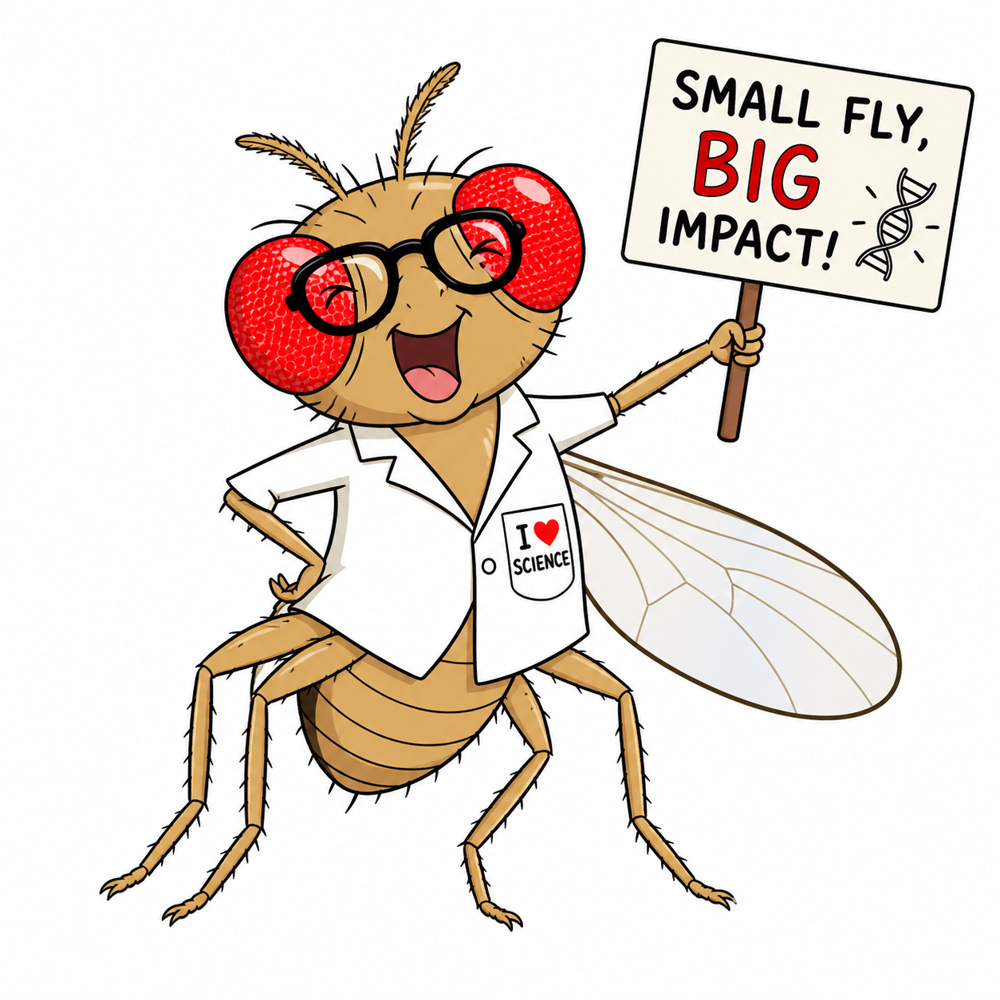

Principal Investigator
Guangyan Wu
Neuroscientist and electrophysiologist studying how internal need states are encoded by neural circuits, membrane excitability, and metabolic signaling.
Principal Investigator
Neuroscientist and electrophysiologist studying how internal need states are encoded by neural circuits, membrane excitability, and metabolic signaling.

This could be you!